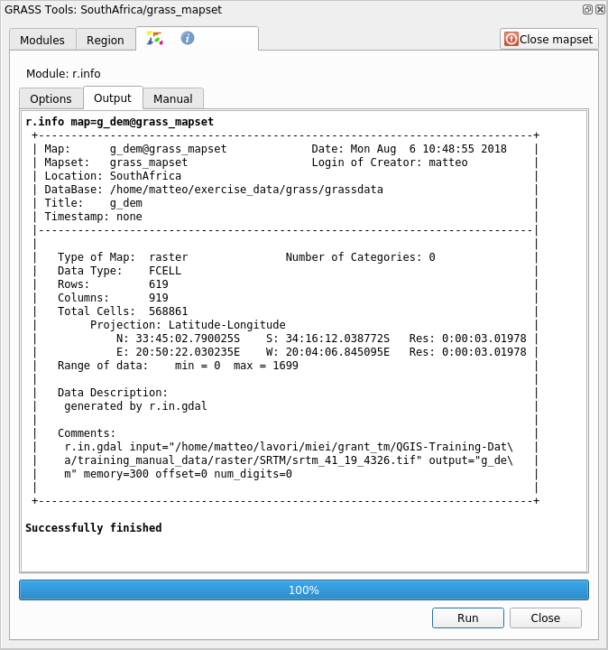

12.2. သင်ခန်းစာ - GRASS Tools (Lesson: GRASS Tools)
ယခုသင်ခန်းစာတွင် GRASS ၏လုပ်ဆောင်နိုင်စွမ်းများကိုသိရှိရန် tool များကိုရွေးချယ်၍ ပြသပေးသွားပါမည်။
12.2.1. ★☆☆ လိုက်လုပ်ကြည့်ပါ - Aspect မြေပုံတစ်ခုဖန်တီးခြင်း (Follow Along: Create an aspect map)
GRASS Tools tab ကိုဖွင့်ပါ
grass_mapset Mapset မှ
g_demraster layer ကိုထည့်သွင်းပါModules List tab ၏ Filter field ထဲတွင် r.aspect module ကိုရှာဖွေပါ
Tool ကိုဖွင့်ပြီး အောက်ပါပုံအတိုင်း setup ပြုလုပ်ပြီး Run ခလုတ်ကိုနှိပ်ပါ-

လုပ်ငန်းစဉ်ပြီးဆုံးသွားသောအခါ View Output တွင် click နှိပ်ပြီး ရလာဒ် layer ကို canvas ထဲသို့ ထည့်သွင်းပါ-
g_aspect layer ကို grass_mapset Mapset အတွင်းတွင် သိမ်းဆည်းထားပါသည်၊ ထို့ကြောင့် layer ကို canvas မှ ဖယ်ရှားပစ်နိုင်သလို လိုအပ်သည့်အချိန်တိုင်း ပြန်လည်ထည့်သွင်းနိုင်ပါသည်။
12.2.2. ★☆☆ လိုက်လုပ်ကြည့်ပါ - Raster layer ၏ အခြေခံစာရင်းအင်းဂဏန်းများကို ရယူခြင်း (Follow Along: Get basic statistic of raster layer)
g_dem raster layer ၏ အခြေခံစာရင်းအင်းဂဏန်းအချို့ကို သိရှိလိုခြင်းဖြစ်ပါသည်။
GRASS Tools tab ကိုဖွင့်ပါ
grass_mapset Mapset မှ
g_demraster layer ကိုထည့်သွင်းပါModules List tab ၏ Filter field ထဲတွင် r.info module ကိုရှာဖွေပါ
Tool ကိုအောက်ပါပုံအတိုင်း setup ပြုလုပ်ပြီး Run ကိုနှိပ်ပါ-

Output tab ထဲတွင် raster အချက်အလက်အချို့ကို မြင်တွေ့ရပါမည်၊ ဥပမာ- ဖိုင်၏လမ်းကြောင်း၊ row နှင့် column များအရေအတွက်၊ အခြားအသုံးဝင်သောအချက်အလက်များ-

12.2.3. ★★☆ လိုက်လုပ်ကြည့်ပါ - Reclass Tool (Follow Along: The Reclass Tool)
Raster layer တစ်ခုအား reclassify (အတန်းအစားပြန်လည်ခွဲခြားခြင်း) ပြုလုပ်ခြင်းသည် အလွန်အသုံးဝင်ပါသည်။ g_dem layer မှ g_aspect layer ကိုဖန်တီးခဲ့ပြီးဖြစ်ပါသည်။ တန်ဖိုးအပိုင်းအခြားသည် 0 (မြောက်ဘက်) မှစတင်ပြီး 90 (အရှေ့ဘက်)၊ 180 (တောင်ဘက်)၊ 270 (အနောက်ဘက်) နှင့် 360 (မြောက်ဘက်) ဖြစ်ပါသည်။ g_aspect layer ကို အတန်းအစား (categories) ၄ ခုသာ ရရှိစေရန် reclassify ပြုလုပ်နိုင်ပါသည် (မြောက်ဘက် = 1 ၊ အရှေ့ဘက် = 2 ၊ တောင်ဘက် = 3 နှင့် အနောက်ဘက် = 4)။
GRASS reclassify tool သည် သတ်မှတ်ထားသော rule များပါဝင်သော txt ဖိုင်ကို လက်ခံပါသည်။ Rule များရေးသားရသည်မှာ အလွန်ရိုးရှင်းပြီး GRASS manual တွင် အလွန်ကောင်းသောရှင်းလင်းဖော်ပြချက်ပါဝင်ပါသည်။
Tip
GRASS tool တစ်ခုစီတွင် သက်ဆိုင်ရာ Manual tab တစ်ခုစီရှိပါသည်။ သင်အသုံးပြုနေသော tool ၏ရှင်းလင်းဖော်ပြချက်ကို အချိန်ပေးပြီး ဖတ်ရှုပါ၊ ထိုမှသာ အချို့အသုံးဝင်သော parameter များ မလွတ်သွားမည်ဖြစ်သည်။
g_aspectlayer ကိုထည့်သွင်းပါ၊ အကယ်၍ မဖန်တီးရသေးပါက ★☆☆ လိုက်လုပ်ကြည့်ပါ - Aspect မြေပုံတစ်ခုဖန်တီးခြင်း (Follow Along: Create an aspect map) အပိုင်းကို ပြန်သွားကြည့်ပါ။Modules List tab ၏ Filter field ထဲတွင် r.reclass module ကိုရှာဖွေပါ
Tool ကိုဖွင့်ပြီး အောက်ပါပုံအတိုင်း setup ပြုလုပ်ပါ။ Rule များပါဝင်သော ဖိုင်သည်
reclass_aspect.txtဟူသောအမည်ဖြင့်exercise_data/grass/folder ထဲတွင် ရှိပါသည်။Run ကိုနှိပ်ပြီး လုပ်ငန်းစဉ်ပြီးဆုံးသည်အထိ စောင့်ပါ-

Reclassify ပြုလုပ်ပြီးသား raster ကို canvas ထဲသို့ ထည့်သွင်းရန် View Output ကိုနှိပ်ပါ
Layer အသစ်တွင် တန်ဖိုး ၄ ခုသာ ပါရှိမည်ဖြစ်ပြီး ၎င်းကို စီမံရန်နှင့် process ပြုလုပ်ရန် ပိုလွယ်ကူစေပါသည်။

Tip
Rule များကိုကြည့်ရှုရန် reclass_aspect.txt ဖိုင်ကို text editor တစ်ခုဖြင့် ဖွင့်ကြည့်ပါ။ ထို့အပြင် GRASS manual ထဲတွင် အသေးစိတ်ကြည့်ရှုပါက အမျိုးမျိုးသော ဥပမာများကို တွေ့ရမည်ဖြစ်ပါသည်။
12.2.4. ★★☆ မိမိကိုယ်တိုင်ကြိုးစားကြည့်ပါ - သင့် rule များဖြင့် Reclassify ပြုလုပ်ခြင်း (Try Yourself: Reclassify with your rules)
g_dem layer ကို category အသစ် ၃ အဖြစ် reclassify ပြုလုပ်ကြည့်ပါ-
0 မှ 1000 ၊ တန်ဖိုးအသစ် = 1
1000 မှ 1400 ၊ တန်ဖိုးအသစ် = 2
1400 မှ အမြင့်ဆုံး raster တန်ဖိုးအထိ ၊ တန်ဖိုးအသစ် = 3
အဖြေ
Raster ၏ အမြင့်ဆုံးတန်ဖိုးကို ရှာဖွေရန် r.info tool ကိုအသုံးပြုပါ၊ console ထဲတွင် အမြင့်ဆုံးတန်ဖိုးသည် 1699 ဖြစ်သည်ကို တွေ့ရပါလိမ့်မည်။ Rule များကို ရေးသားရန် အဆင်သင့်ဖြစ်ပါပြီ။
Text editor တစ်ခုကိုဖွင့်ပြီး အောက်ပါ rule များကို ထည့်သွင်းပါ-:
0 thru 1000 = 1 1000 thru 1400 = 2 1400 thru 1699 = 3
ဖိုင်ကို
my_rules.txtဖိုင်အနေဖြင့် သိမ်းဆည်းပြီး text editor ကိုပိတ်လိုက်ပါ။r.reclasstool ကို run ပါ-g_demlayer နှင့် rule များပါဝင်သော ဖိုင်ကို ထည့်သွင်းပါ။Run ကိုနှိပ်ပြီးနောက် View Output ကိုနှိပ်ပါ။ အရောင်များကို ပြောင်းလဲနိုင်ပြီး နောက်ဆုံးရလာဒ်သည် အောက်ပါပုံအတိုင်း ဖြစ်သင့်ပါသည်-
12.2.5. ★★☆ လိုက်လုပ်ကြည့်ပါ - Mapcalc Tool (Follow Along: The Mapcalc Tool)
Mapcalc tool သည် QGIS ၏ Raster Calculator နှင့်ဆင်တူပါသည်။ တစ်ခု သို့မဟုတ် တစ်ခုထက်ပိုသော raster layer များတွင် သင်္ချာ operation များလုပ်ဆောင်နိုင်ပြီး နောက်ဆုံးရလာဒ်သည် တွက်ချက်ထားသောတန်ဖိုးများပါရှိသော layer အသစ်တစ်ခုဖြစ်ပါလိမ့်မည်။
နောက်လာမည့်လေ့ကျင့်ခန်းတွင် g_dem raster layer မှ တန်ဖိုး 1000 ထက်ပိုကြီးသော တန်ဖိုးများကို ထုတ်ယူမည်ဖြစ်သည်။
Modules List tab ၏ Filter field ထဲတွင် r.mapcalc module ကိုရှာဖွေပါ။
Tool ကိုစတင်အသုံးပြုပါ။
Raster တစ်ခု သို့မဟုတ် raster များအစု ပေါ်တွင် လုပ်ဆောင်မည့် analysis များ sequence (တစ်ခုပြီးတစ်ခု အစဉ်လိုက်) တစ်ခုကို Mapcalc dialog တွင် တည်ဆောက်နိုင်ပါသည်။ အဆိုပါ tool များကိုအသုံးပြုရန်-

အစဉ်လိုက်အရ-
Add map - လက်ရှိ GRASS mapset မှ raster ဖိုင်တစ်ခုထည့်သွင်းပေးပါသည်။
Add constant value - Function များထဲတွင် အသုံးပြုမည့် ကိန်းသေတန်ဖိုးတစ်ခုထည့်သွင်းပါ၊ ဤလေ့ကျင့်ခန်းတွင် 1000 ဖြစ်ပါမည်။
Add operator or function - Input များနှင့် output များတွင် ချိတ်ဆက်ပေးရမည့် operator သို့မဟုတ် function တစ်ခုထည့်သွင်းပါ၊
greater equals thanoperator ကိုအသုံးပြုပါမည်။Add connection - Element များကို ချိတ်ဆက်ပေးပါသည်။ ဤ tool ကိုအသုံးပြု၍ item တစ်ခုပေါ်ရှိ အနီစက် ပေါ်တွင် click နှိပ်ဖိဆွဲပြီး အခြား item တစ်ခုပေါ်ရှိ အနီစက်တစ်ခုနှင့်ချိတ်ဆက်ပေးနိုင်သည်။ Connector line တစ်ခုနှင့် မှန်မှန်ကန်ကန်ချိတ်ဆက်သော အစက် (dot) များသည် မီးခိုးရောင်သို့ ပြောင်းသွားမည်ဖြစ်သည်။ Line သို့မဟုတ် dot သည် အနီရောင်ဖြစ်နေလျှင် ချိတ်ဆက်မှုမမှန်ကန်သေးပါ။
Select item - Item တစ်ခုကို select လုပ်ပေးပြီး၊ select လုပ်ထားသော item များကိုရွှေ့ပေးပါသည်။
Delete selected item - Select လုပ်ထားသော item ကို လက်ရှိ mapcalc sheet မှဖယ်ရှားပေးပါသည်၊ သို့သော် mapset မှ မဖယ်ရှားပါ (အကယ်၍ ၎င်းသည် ရှိနေပြီးသား raster တစ်ခုဖြစ်နေလျှင်)
Open - Operation သတ်မှတ်ထားပြီးသော ရှိနေပြီးသား ဖိုင်တစ်ခုကို ဖွင့်ပေးပါသည်။
Save - Operation အားလုံးကို ဖိုင်တစ်ခုထဲတွင် သိမ်းဆည်းပေးပါသည်။
Save as - Operation အားလုံးကို ကွန်ပျူတာထဲတွင် ဖိုင်အသစ်တစ်ခုအဖြစ် သိမ်းဆည်းပေးပါသည်။
အဆိုပါ tool များကိုအသုံးပြုပြီး အောက်ပါ algorithm ကိုတည်ဆောက်ပါ-

Run ကိုနှိပ်ပြီးနောက် output ကို မြေပုံထဲတွင်ပြသစေရန် View output ကိုနှိပ်ပါ-

ရလာဒ်သည် မြေမျက်နှာသွင်ပြင် 1000 မီတာထက် ပိုမြင့်သော ဧရိယာများအားလုံးကို ပြသပေးမည်ဖြစ်ပါသည်။
Tip
သင်ဖန်တီးထားသော formula ကိုလည်း သိမ်းဆည်းထားနိုင်ပြီး ၎င်းကို အခြား QGIS project ထဲတွင် ထည့်သွင်းနိုင်ပါသည်၊ GRASS Mapcalc toolbar ပေါ်ရှိ နောက်ဆုံးခလုတ်ကို နှိပ်ခြင်းဖြင့် ထည့်သွင်းနိုင်ပါသည်။
12.2.6. နိဂုံးချုပ် (In Conclusion)
ယခုသင်ခန်းစာတွင် GRASS တွင်အသုံးပြုနိုင်သော tool များစွာထဲမှ အနည်းငယ်ကိုသာ ပြသပေးထားခြင်းဖြစ်သည်။ GRASS ၏လုပ်ဆောင်နိုင်စွမ်းများကို မိမိကိုယ်တိုင် လေ့လာနိုင်စေရန် GRASS Tools dialog ကိုဖွင့်ပြီး Modules List တွင် ကြည့်ပါ။ သို့မဟုတ် tool များကို အမျိုးအစားအလိုက်စုစည်းထားသော Modules Tree tab အောက်တွင် ကြည့်ပါ။